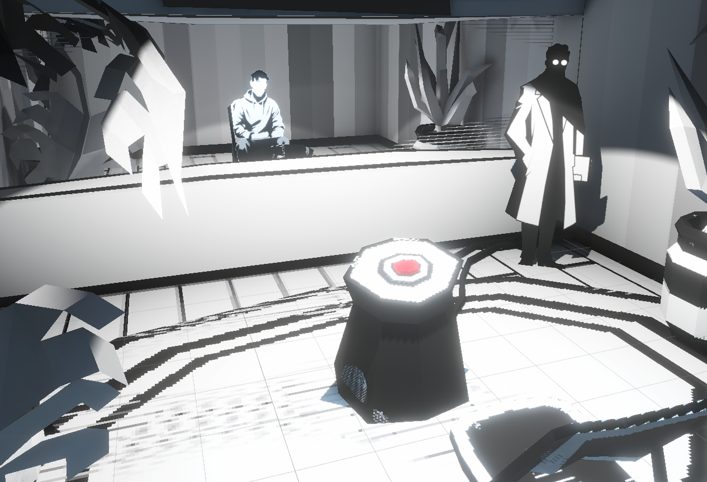
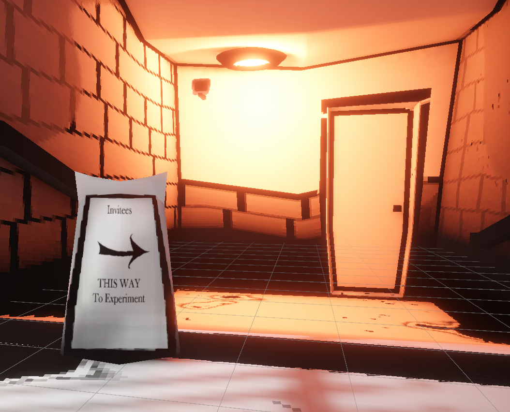

Waive your morals

Description
Update: Fixed bugs in script leading to loops, Fixed text readability, hopefully
Do you always read through the waivers you sign? What happens when the one you skipped also puts you in the driver seat for a horrible twisted psychological experiment. What choices will you make? Will anything go wrong?
thanks to @bugmage, Emma Caraway for making the art!
Nothing can go wrong, famous last words before you become involved in a sketchy psychological trial
Screenshots & Images


Play The Game
Feedback & Comments
"The art is absolutely the highlight here, I especially like how you made the scientist literally shady. I had an issue where the camera would drift after some dialogue but it did not detract from the experience!" - BeepBoopCereal
"Loved the monochrome style, very interesting concept." - bluegarrett
"Cool visuals and art style!" - Greed_End
"Amazing art, gameplay felt a bit slow and too much reading, maybe a voice acting or some sound effects could improve it, but well done anyway!" - VeryLancer
"Dripping with vibes" - campak
"It was decently fun and I loved the art style, Some problems I noticed was that the other participant would complain about the shock being turned up even if he hadn’t been shocked yet. Also, the mouse sensitivity needs higher settings, I turned it all the way up and it still felt so slow. Oh yeah, I also thought the tester’s reactions to what you do were cool." - AlexThePerson
"Loved this so much!! The artsyle is so good! The idea also! Its short but sweet, i dunno if the ending is the moment you finish the experiment, but thats all i could play, after all i could not interact with anything, if thats the end, i would make something that tells you that is the end, but overall, great game!" - ThatVidartGuy
"Emma did some truly great work with art. That's what I call real style! I enjoyed the game and like I said visuals were stunning. I suggest adding some more sounds or ambience. Overall this is a good project!" - Manwiththeredhat
"i like the artstyle" - mehhhh01
"Cool visuals and art style! The only issue I had was the mouse sensitivity being super high. Changing the setting in the menu did not seem to have an effect (was playing on WebGL)" - Bastion Codes
"I love the art style and the overall theme. Awesome work, I'd love to see this expanded on." - MoonFall Software
"oHH i like the theme about social experiments, when I realized it's it I was like whhaaaat that's my stop also in the beginning it reminded me of beholder by the vibe ang graphics, you should make it further honestly" - viffywoo
"I didn't really get the idea but liked the art style. Art remined me of Bendy" - solidesu
"I liked the art style and the overall vibe. This has a lot of potential. BTW. Cat's are not plotting to take over the world. They already did and there's no way to stop them now :)" - RadishAndSquirrel
"The art direction is excellent. I love the jazz-punk / noir atmosphere. The UI would benefit from some cleanup. While I love the font face, it needs something to keep it from blurring into the text box. At the moment it looks nice but is difficult to read. Keep up the great work!" - Tower Illusion II
"The visuals are, so stunning. The UI could be better but omg the graphics. Also intresting story" - Gerog123
"I really like art! Trying to make a narrative game on a game jam is quite a challenge! I’m not a writer so I can’t give you good comments on the narrative aspect, sorry but in Polish terms: Lightning is great, I like the dark and white atmosphere. Sometimes it’s hard to know where we should go. The Ui is difficult to read espacilly when it is white on white. Comments should be added when aligning to UI elements. In general it’s a good game to keep doing things like that!" - Nathan
"I love the style of the game!" - KrisDank